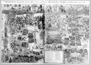

[Geen titel,] Praelii huius Foederati Belgii Ordinum auspiciis ductuque Mauritii Nassovii feliciter pugnati hypotyposis eisdem illustrissimis proceribus principique devovetur [ ..]. Florentius Balthasar ad vivum expressit [...]. 4 bladen, kopergravure, 590 x 880 mm. [Amsterdam, 1600 of kort daarna.] -- (COLLBN 009-14-004)
Wanneer het om gevechten te land gaat, die een nogal ingewikkeld verloop hebben, komt het ons tegenwoordig voor dat de zeventiende-eeuwse formule van het totaaloverzicht nu niet bepaald toereikend is voor het levendig weergeven van het gebeuren. Getoond is de ‘officiële’ weergave van het gebeuren in de grote, uit vier bladen bestaande prent van Floris Balthasar van Berckenrode. Het stuk heeft als bovenafsluiting een dateringsopschrift, waarin het jaartal 1600 (M = 1000, drie maal C = 300, vijfmaal L = 250, acht maal V = 40 en tien maal I = 10), verder de wapens van de Zeven Provinciën en van de prins, alsmede een opdracht-cartouche. Onderaan is afgebeeld de Nederlandse maagd in de ‘gesloten tuin’; gezeten op het tablet waarop een lofdicht is geschreven, krijgt zij de overwinningskrans aangereikt. En dan is er nog rechts onder de trofee, die op eigen wijze het gebeuren toelicht. De Latijnse versregels zijn van de hand van Hugo de Groot; zij verheffen de zin van het historisch gebeuren, en derhalve ook van de voorstelling, zoals het geval was bij de uitbeelding van het ruitergevecht bij Turnhout (zie nummer 115).
Het plaatsje Nieuwpoort, aan het eind van een kanaalachtige haven gelegen, verzinkt bijna in het niet tegenover de gedetailleerde verbeelding van de veldslag, die zich in de landerijen achter de duinen afspeelt. Prins Maurits en zijn troepen bevinden zich links in beeld, de vijandelijke troepen nemen de rechterhelft in beslag. Er is één handgemeen heel duidelijk weergegeven: ‘la première charge’ staat er ter verduidelijking bij en om de kijker al te laten aanvoelen welke kant het op gaat vindt deze charge op het ‘terrein’ van de Spanjaarden plaats, rechts van de middenas. Elk van de twee legermachten houdt hele detachementen ruitersoldaten in reserve, waarbij verschillende tactieken worden gevolgd: Maurits, groter strateeg dan zijn tegenstander, heeft zijn troepen over een breed dubbel front opgesteld, terwijl de Spanjaarden lijken te vertrouwen op meer over een smalle strook geconcentreerde aanvalsgolven. De infanterie- en ruiterbrigades, die evenwijdig aan het strand door de duinen tegen elkaar optrekken, zijn inmiddels ook slaags geraakt en bestoken elkaar met kanonvuur. En op het strand sluit een omvangrijk detachement Spaanse troepen, met kanonnen in de voorste linies, uit dat de prinselijke troepen tot een aanval in de flank of in de rug kunnen overgaan.
We moeten ons na dit alles realiseren dat het treffen tussen Maurits’ troepen en die van Albertus van Oostenrijk in werkelijkheid zijn hoogtepunt vond in een gevecht op het strand. Dat wordt in deze overzichtsprent niet getoond. Het ging er duidelijk om te laten zien hoe een groot veldheer als Maurits langs strategische weg en door het op juiste wijze inzetten van zijn soldaten tot een overwinning komt; met Gods hulp (‘belligerante Deo’), dat wèl.
Literatuur
- J.T. Bodel Nijenhuis, ‘Over de Nederlandsche landmeters en kaartgraveurs Floris Balthasar en zijne drie zonen: onbekend aan de levensbeschrijvers’, in: Verslagen van het Koninklijk Nederlands Instituut van Wetenschappen, 1845, p. 316-367, hier p. 322. Herdrukt in: Acta cartographica, 7 (1970), p. 14-66.
- F. Muller, De Nederlandsche geschiedenis in platen. Beredeneerde beschrijving van Nederlandsche historieplaten, zinneprenten en historische kaarten. Amsterdam 1863-1882. 4 dln, I, vergelijk nr. 1136.
- G. van Rijn, Atlas Van Stolk. Katalogus der historie-, spot- en zinneprenten betrekkelijk de geschiedenis van Nederland, verzameld door A. van Stolk Cz. Amsterdam 1895-1933. 10 dln, II, vergelijk nr. 1084.
- A.G.G.M. Eyffinger, Grotius poeta. Aspecten van Hugo Grotius’ dichterschap. [‘s-Gravenhage 1981], p. 19-59.
| vorige pagina | top pagina |